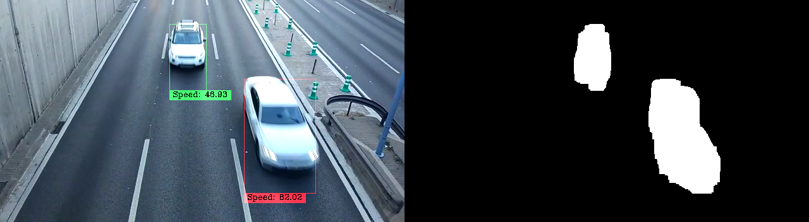

This page serves as an overview of the project developed over the course of M4. The goal of the project is to count moving cars in a highway and estimate their speed. To do so we have explored the well known approach of background modelling to retrieve the moving objects. Using morphological operations we have been able to substantially improve both the numerical and visual performances of our system. We conducted a study of stabilization to improve the image quality reducing the effect of wind and pulse that were adding a jitter to the recordings. Finally, we developed from zero a Kalman filter to estimate the position and speed over the road of each car. The result is an autonomous system that can be used for road surveillance and traffic monitoring in outdoors environments.
All the code can be found at the github page, in addition we have written a paper.
During the development of the project, and as the only team of 2017 implementing our system in Python, we found several function implementations that were easily done in MATLAB but did not have a good Python counterpart. Some of these alternatives presented additional issues that hintered our progress. Some of these issues were difficult installations, the lack of a multiplatform implementation, lack of easy to use documentation or simply absence. We made the best effort to try to overcome these obstacles, and for the use of the next master students, we have created a small list with all the functionalities we could not find in OpenCV or standard Python libraries: